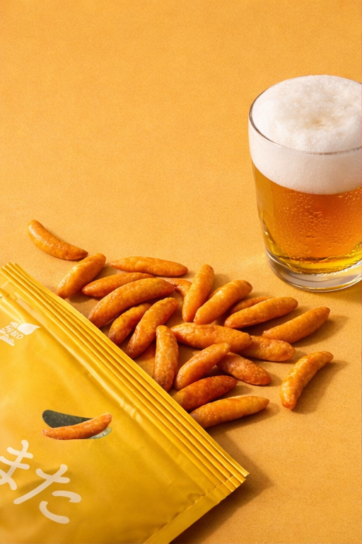
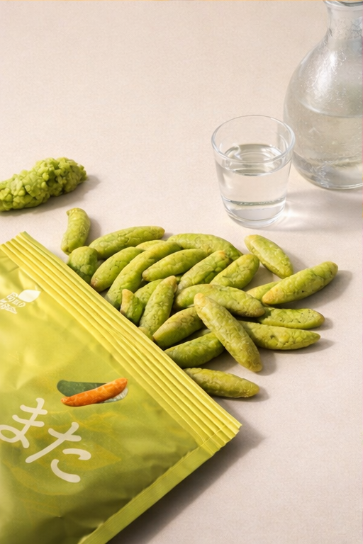
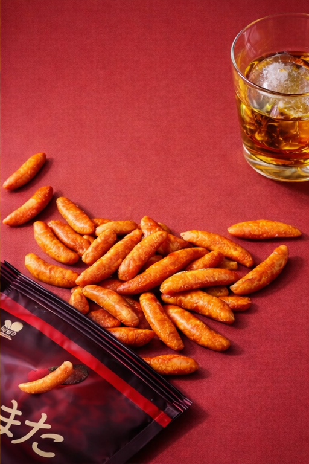
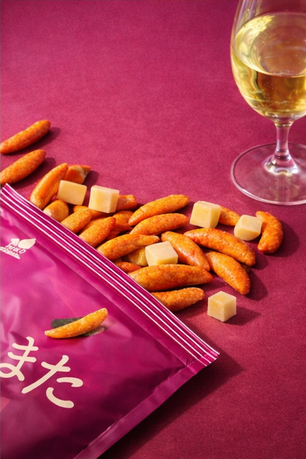

酱油味
咸鲜稳定、接受度高，适合作为啤酒场景的基础走量款。
- 规格：70g / 150g / 500g
- 推荐酒型：生啤 / 拉格
- 推荐时段：首杯点单
每个风味都绑定推荐酒型与销售时段，帮助服务员快速做连带推荐。

咸鲜稳定、接受度高，适合作为啤酒场景的基础走量款。

辛香冲击更直接，适合和高烈度酒搭配，带动续杯场景。

麻香与辣感突出，适合重口人群与高酒精度酒型搭配。

酸甜清爽，和果味酒更容易形成顺口搭配，点单门槛低。
不用复杂术语，直接看三件事：每100桌多几桌加购、晚高峰多卖几份、每晚营业额大概多多少。
每 100 桌里，通常多 12-28 桌会顺手加一份柿种
按每份 12 元算，每 100 桌约多卖 144-336 元小食。
晚高峰时段（22:00-01:00）小食加购通常多 10%-22%
如果你高峰本来卖 80 份小食，通常可多卖约 8-18 份。
按典型门店反馈，每晚酒水相关营业额通常多 8%-18%
例：酒水夜营业额 8000 元时，约多 640-1440 元。
* 数据来源：近三个月典型客户门店反馈汇总（样本区间，非官方统计）。实际结果会受门店客群、陈列位置、服务员推荐执行度影响。
给前台与服务员一张可直接执行的速查表，降低推荐门槛。
| 柿种风味 | 推荐酒型 | 搭配逻辑 | 推荐时段 |
|---|---|---|---|
| 酱油味 | 生啤 / 拉格 | 咸鲜风味与麦香匹配，首单更容易被接受 | 首杯引导 |
| 芥末味 | 威士忌 / 高球 | 辛香刺激提升风味层次，适配烈度更高酒体 | 续杯推荐 |
| 麻辣味 | 伏特加 / 朗姆等蒸馏酒 | 重口补充，适合高氛围时段与聚会客群 | 高峰后段 |
| 梅子味 | 果味气泡酒 / 梅酒苏打 | 酸甜清爽，女性客群更容易形成复购 | 轻饮与收尾 |
从陈列、话术到组合定价，帮助门店把“配酒推荐”做成稳定动作。
首杯默认推荐“酱油味+啤酒”，把推荐动作前置到第一次点单。
第二轮酒水切换时同步推荐芥末味或麻辣味，提升续单率。
梅子味与果味气泡酒绑定陈列，适合轻饮与拍照分享场景。
支持常规口味与定制包装，保障活动档期不断货。
提供门店类型、日均酒水单量、目标客单价区间与主推酒型。
按酒型结构给出风味组合、上架数量建议与工厂报价。
小批量试跑 2-4 周，观察连带购买率与客单表现变化。
确认效果后扩大铺货，按档期做口味轮换与活动搭配。
邮箱：sales@example.com
电话：+86 138-0000-0000
微信：KAKITANE_B2B
可快速提供：配酒矩阵、上架数量建议、工厂报价单
留下门店经营信息，我们将提供配酒上架方案、试样建议与报价。